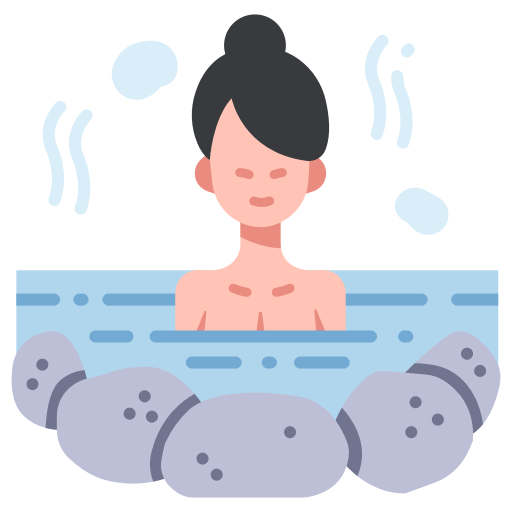

Kanjis Flash Cards
 JLPT 5
JLPT 5
 JLPT 4
JLPT 4
JLPT 3
 JLPT 2
JLPT 2

JLPT 1
JLPT 5
JLPT 4
JLPT 2
 Lecture KUN
Lecture KUN
 Lecture ON
Lecture ON
Je m'appelle Damien et je suis fan du Japon, de sa culture et de sa langue.
Je suis débutant en japonais. J'ai fait cette web app dans le but de m'aider à réviser les kanjis.
Si ça peut en servir à d'autres, je la partage avec plaisir.
Répertorier les kanjis par niveau est ce qui me demande le plus de travail.
J'ai constaté qu'il n'est pas forcément évident de trouver des listes officielles avec un nombre officiel de Kanjis par liste également.
Et d'une liste à l'autre, parfois, il peut ne pas y avoir les même kanjis...
De plus, je réalise cette application web durant mon temps libre. J'ai un travail et une vie à côté :)
J'ai essayé de faire en sorte de privilégier l'affichage pour mobile en mode portrait.
Si le tout sur un ordinateur peut passer, ce n'est peut être pas optimal.
Si cela s'affiche mal sur votre téléphone, voir la section ci-dessous avec les rapports de bugs.
- Rapport de bugs : si vous constatez un bug d'affichage, d'utilisation ou une erreur sur la fiche d'un kanji, ce serait super de pouvoir me le remonter par mail : [damienkanji[at]gmail.com].
Il me faut quelques infos : le descriptif du bug, quand il apparaît (quel écran, quelle manipulation a été faite...), votre modèle de téléphone (très important) et votre navigateur (Chrome, Safari..) : très important également.
Si en plus, vous pouvez joindre une capture d'écran du problème, ce serait formidable.
- Graphisme : vous êtes graphiste, UX designer, vous voudriez proposer une amélioration graphique pour l'application ? Mais je vous en prie ! Mailez moi :)
- Recherche kanjis : Si vous pensez pouvoir me fournir une liste claire et officielle des différents niveaux JLPT, vous m'aideriez énormément. J'ai besoin : du kanji, de ses prononciations (un maximum) KUN (en Hiragana) et ON (en KATAKANA) et de sa signification en FRANCAIS.
- Idées : Vous avez une idée géniale et pas trop farfelue ;), proposez là moi. On ne sait jamais.
Si au passage vous avez une idée de nom pour cette web app, je suis preneur. Je me rends bien compte que le nom donné n'est peut être pas super...
mon mail : [damienkanji[at]gmail.com]
- La chaine Youtube "Cours de japonais" de Julien Fontanier. Il propose des cours de japonais gratuitement. Je n'ai pas trouvé mieux.
- Le livre Kanji to Kana : pour rechercher des Kanjis et aussi en découvrir. Quand on sait comment les rechercher, c'est très utile. (un peu cher)